A desk sharing a room with a bed creates a problem no other home office setup has to deal with.
Without some kind of boundary, work bleeds into sleep, and sleep bleeds into work.
The fix isn't picking a style. It's picking a way to separate the two functions, visually or physically.
These 20 setups each solve that boundary problem a different way.

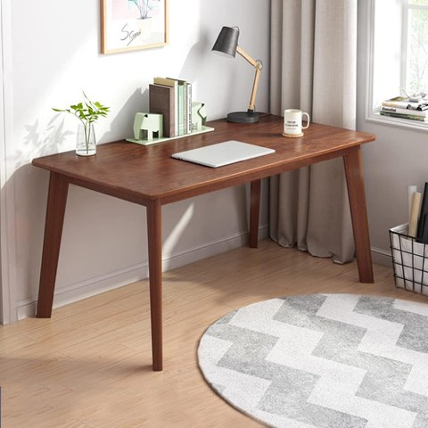
IOTXY Simple Wooden Writing Desk, 47" W PC Laptop Computer Table, Walnut
Shop on Amazon1. Fold the Desk Away Completely
When there's genuinely no room to spare, a desk that folds completely flat against the wall removes the boundary problem by removing the desk itself when it's not in use.
This suits the smallest bedrooms, including dorm-style or studio setups.
The ritual of folding it away at day's end does real psychological work, not just physical.
It's the most literal "out of sight" solution on this entire list.
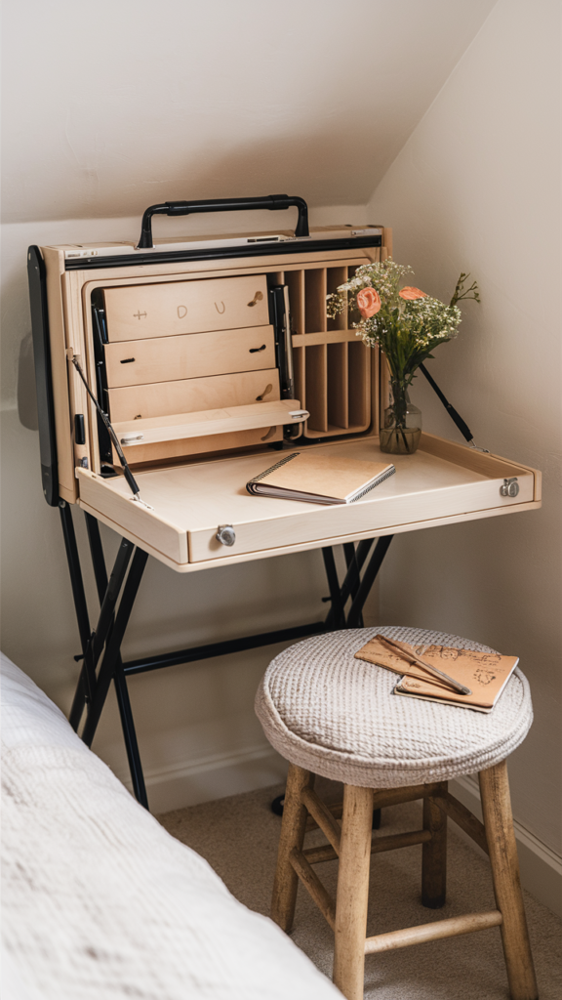
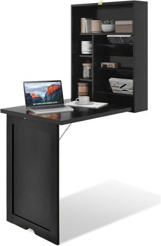
SILKYDRY Wall Mounted Fold Out Convertible Desk with Storage Shelves, Black
Shop on Amazon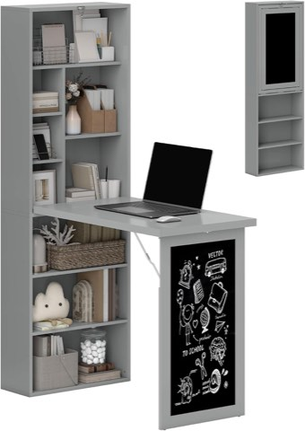
HOMCOM Foldable Desk Wall Mounted Convertible Table for Small Spaces, Gray
Shop on Amazon2. Give the Work Zone Its Own Gallery Wall
Art or photos arranged specifically around the desk area, distinct from art elsewhere in the bedroom, marks that wall segment as its own territory.
This is a low-cost way to claim a boundary using something you likely already have on hand.
The content of the gallery can lean more "inspiration" than "personal," reinforcing the work association.
A decorative solution to a functional problem.
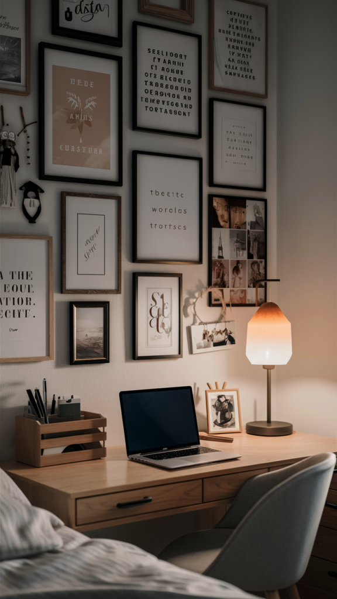
HAUS AND HUES White Oak Gallery Wall Frames 10 Pack
Shop on Amazon3. Soften It With a Rustic Desk
Natural wood and warm textiles at the desk soften the line between "office furniture" and "bedroom furniture."
This suits a room that wants the work zone to feel integrated rather than separate.
It's the opposite approach to the industrial or monochrome ideas further down this list. Blending in instead of standing apart.
Works best when the rest of the bedroom already shares a similar rustic warmth.
4. Layer Your Lighting for Mode-Switching
Bright task lighting during work hours, swapped for a warm lamp in the evening, signals the shift from work mode to rest mode without moving a single piece of furniture.
This is one of the most practical boundary tools available, since it changes daily rather than staying fixed.
A dimmer or a second lamp makes the switch effortless.
Worth prioritizing even if nothing else on this list gets implemented.
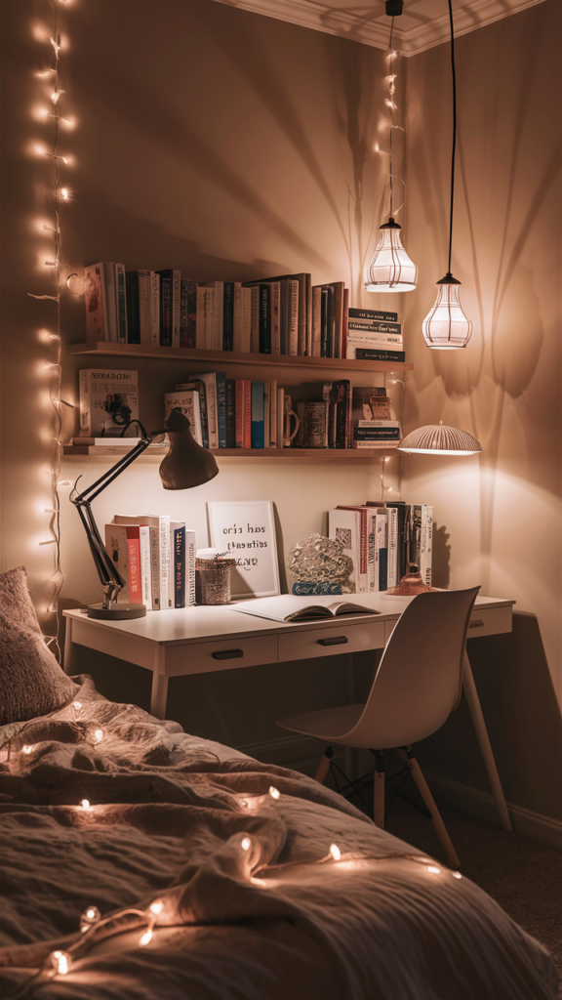
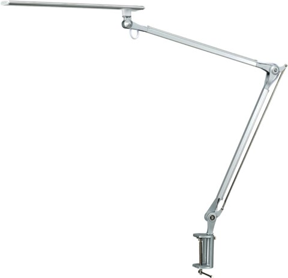
PHIVE CL-1 Architect Desk Lamp, LED Clamp on Desk Light with Metal Swing Arm
Shop on Amazon5. Go Monochrome in the Work Corner
A single-tone desk area set against a different-toned bedroom creates a clear visual division between the two zones.
This works especially well in a smaller room where a hard physical boundary isn't practical.
The color discipline itself acts as the wall that doesn't exist.
A subtle but effective version of the color-blocking idea further down.
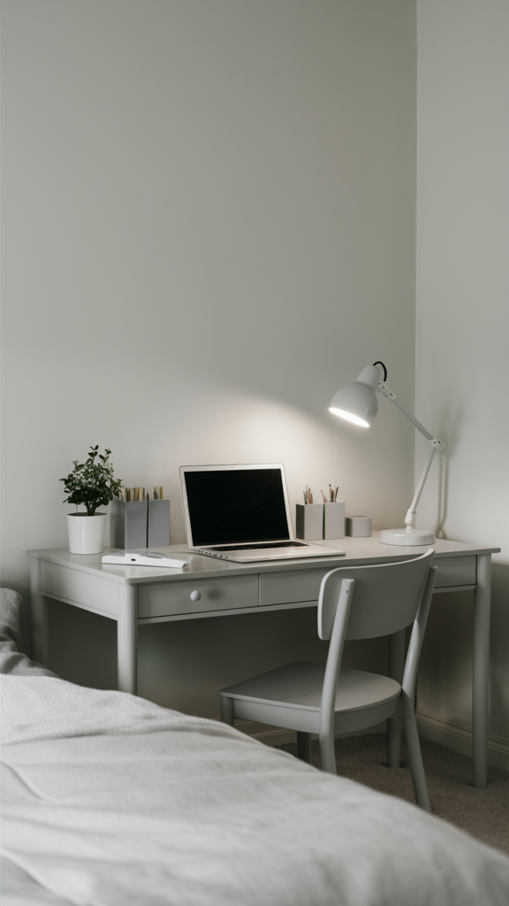
6. Position the Desk for a View, Not the Bed
Facing the desk toward a window or a specific focal point, rather than toward the bed, keeps the two zones from visually overlapping.
Looking at a wall or a window while working, instead of at the bed, helps mentally separate the two functions.
This is a simple furniture arrangement choice rather than a purchase.
Often overlooked, but one of the easiest boundary tricks to apply immediately.
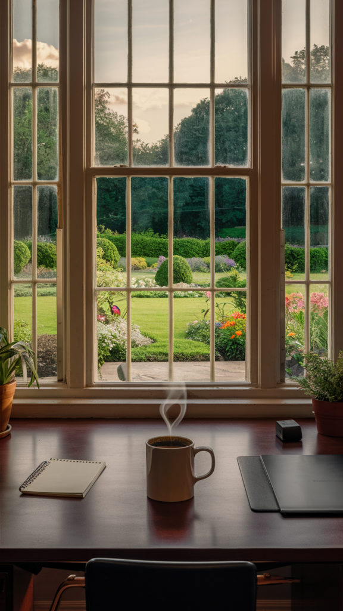
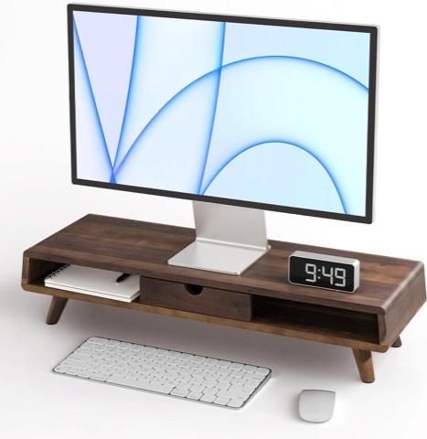
Tinamo Wood Monitor Stand with Drawer & Storage, Walnut Color, Patented
Shop on Amazon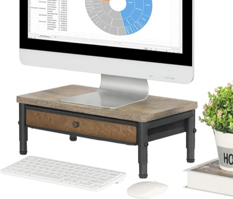
Wood Monitor Stand Riser with Drawer, 15.7x9.4 Inch Computer Monitor Stand for Desk
Shop on Amazon7. Hide the Office Behind Cabinet Doors
A desk that folds into a cabinet and disappears behind closed doors is the most complete boundary solution on this list, short of a separate room.
This requires real furniture investment or custom carpentry.
Closing the cabinet doors is as close to leaving the office as a shared bedroom allows.
Worth it if you struggle most with mentally switching off from work.
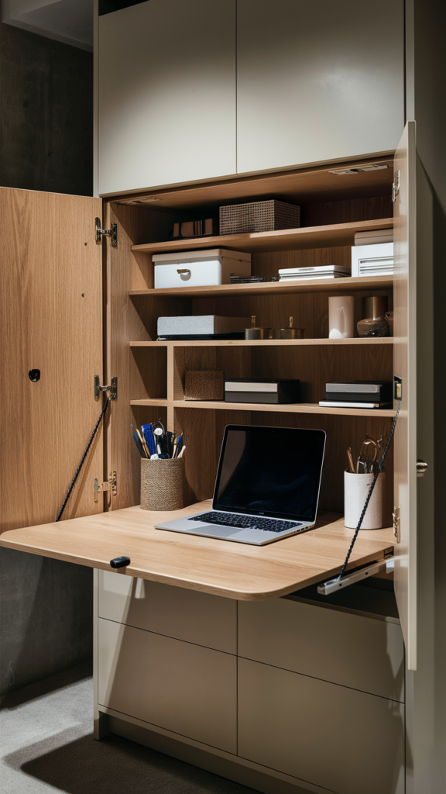
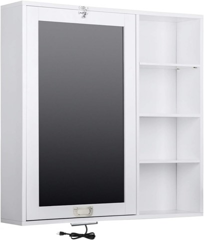
Utopia Alley Collapsible Fold Down Desk Table with Storage Cabinet & Shelves
Shop on Amazon8. Reset the Eye With Scandinavian Simplicity
A clean, pared-back desk area gives the eye a visual break from a busier bedroom.
Simplicity here functions as its own kind of boundary. The calm of the desk zone contrasts with whatever's happening in the rest of the room.
This suits a bedroom that already leans toward more texture or color elsewhere.
A quiet corner by design, not by accident.
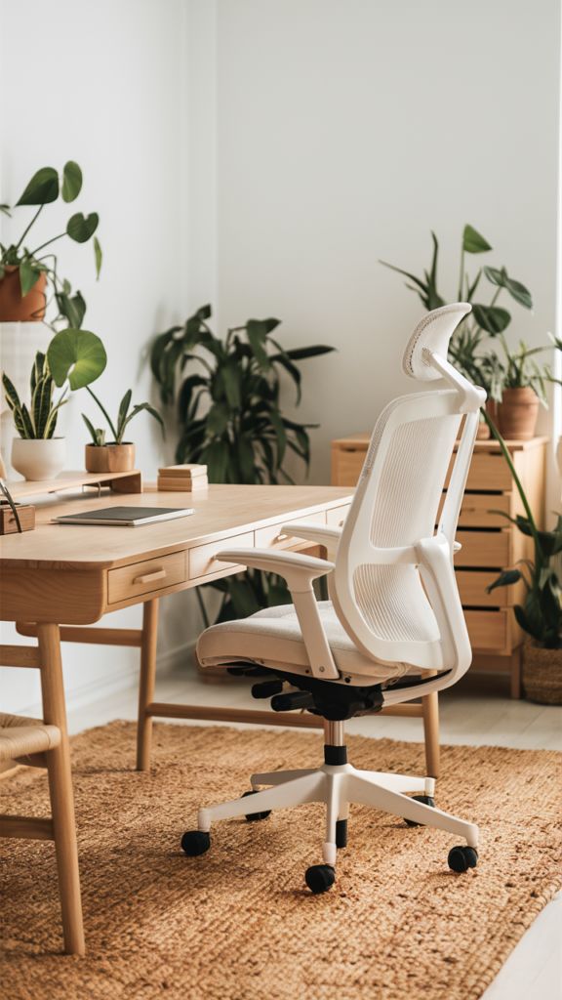
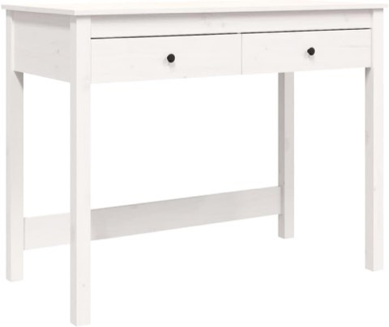
vidaXL Desk, Solid Pinewood White Desk with Drawers, Compact Size Office Furniture
Shop on Amazon9. Use Industrial Materials for Contrast
Metal, raw wood, and exposed hardware in the desk area contrast sharply with softer bedroom textiles elsewhere.
This creates an immediate material boundary the eye registers without needing a physical wall.
Suits anyone who wants the work zone to feel deliberately different, even a little utilitarian.
A strong style choice that also solves the separation problem.
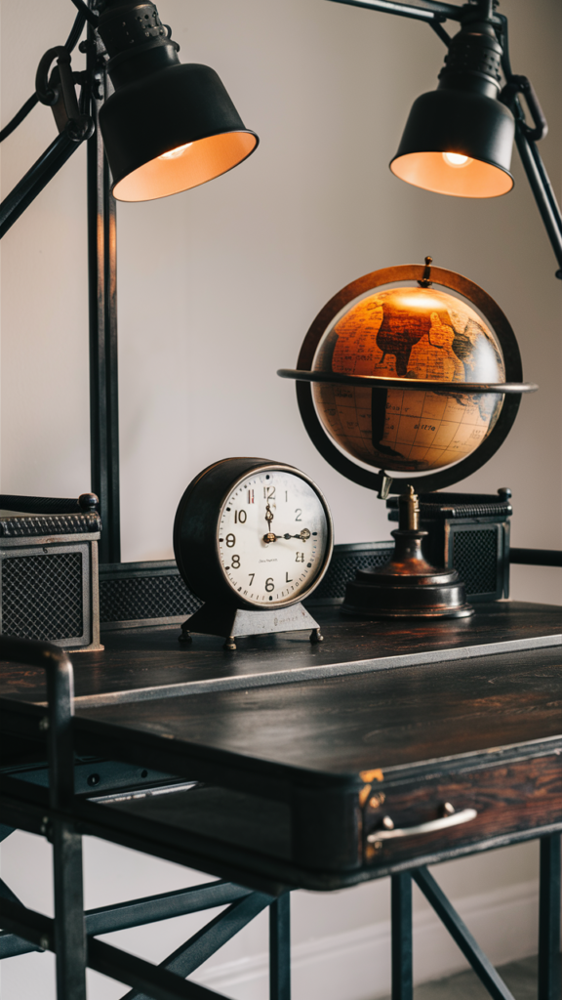
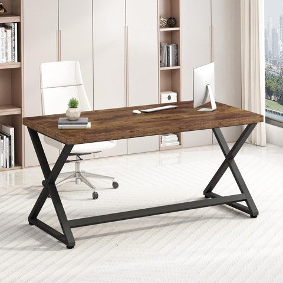
IBF 47" Computer Desk, Home Office Work Writing Study Desk, Rustic Brown
Shop on Amazon10. Go Retro With a Mid-Century Workspace
A distinct furniture style for the desk area, different from the bedroom's main aesthetic, reinforces that it's a separate zone.
Mid-century pieces in particular read as "office furniture" even in a bedroom setting.
This works well when the desk and chair are visually distinct from the bed and nightstands nearby.
Style contrast doing double duty as boundary-setting.
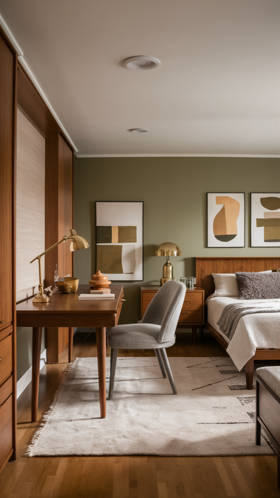
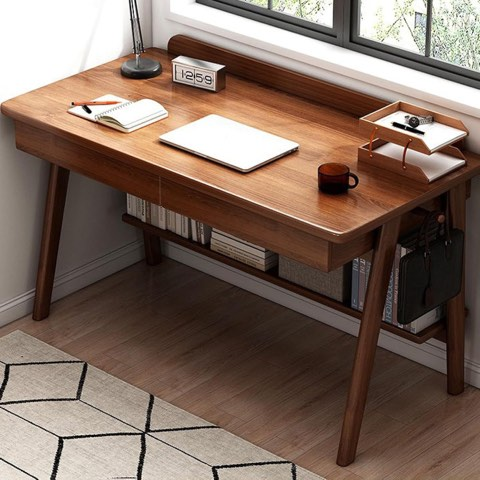
ALEEIK Mid-Century Modern Walnut Writing Desk with 2 Storage Drawers, 39 Inch
Shop on Amazon11. Give It Its Own Boho Mood
Giving the work corner a distinctly different style, layered textures, warm lighting, plants, from the rest of the bedroom creates separation through mood rather than physical barriers.
This suits anyone who wants the work zone to feel inspiring rather than purely functional.
The contrast in feel does some of the same job a curtain or wall would.
A softer, more atmospheric approach to the same boundary problem.
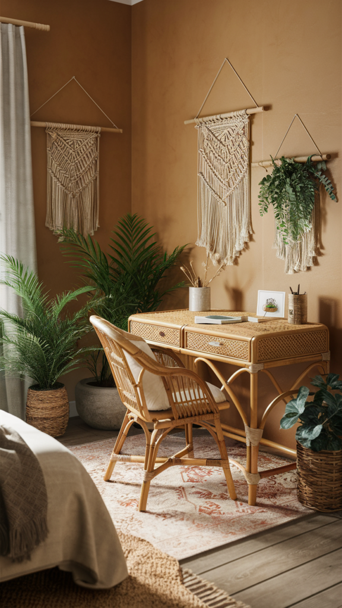

12. Go Slim and Add Overhead Storage
A narrow desk profile takes up minimal floor space, keeping the work zone compact and contained rather than sprawling into the room.
Overhead storage keeps supplies up and out of the way rather than spreading across other surfaces.
This suits a room where the desk needs to stay visually small relative to the bed.
A footprint-conscious approach to the boundary problem.
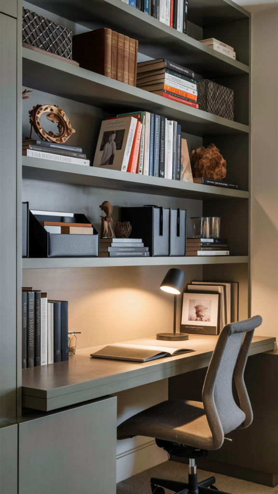

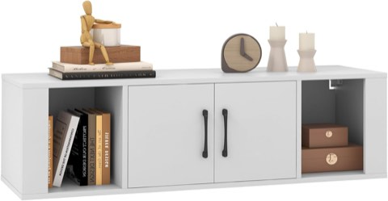
GIANTEX Wall Mounted Storage Cabinet, 2 Cube Floating Desk with Doors, White
Shop on Amazon13. Let Natural Light Draw the Line
Placing the desk near a window, while keeping the bed on the opposite or adjacent wall, naturally separates the two zones by orientation.
This isn't primarily about boundary-setting, but it has the side effect of creating one anyway.
Facing a window also makes the work corner feel less like it's intruding on the sleeping area.
A practical choice that happens to support the bigger goal.
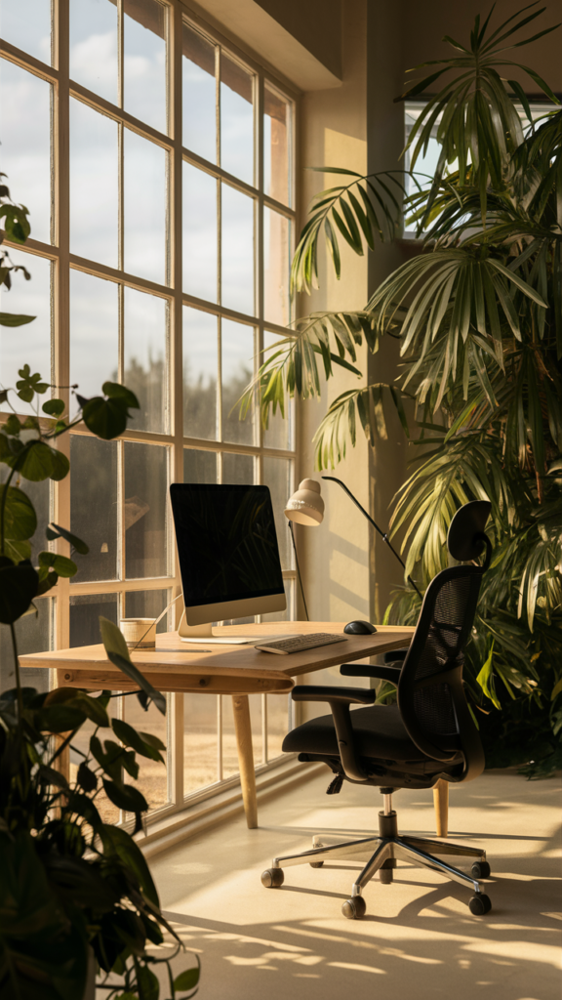
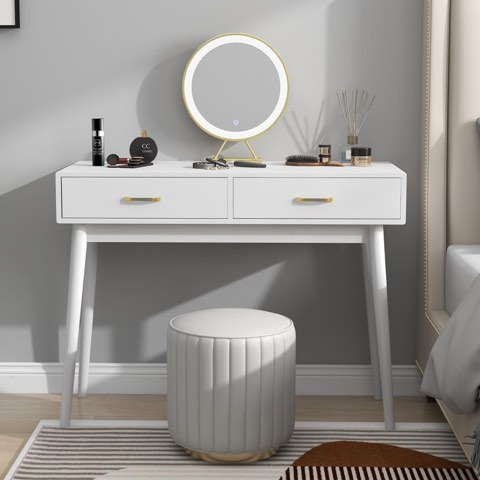
FUNKOCO White Small Writing Desk with Drawers, 40 Inch Writing Desk for Home Office
Shop on Amazon14. Let the Desk Double as a Vanity
A single surface that serves two different functions blurs the boundary in one sense, but it also means the desk never feels purely work-coded.
This suits a smaller room that genuinely can't spare two separate surfaces.
The trick is keeping work supplies in a drawer so the vanity function can take over visually at the end of the day.
A practical compromise rather than a clean separation.
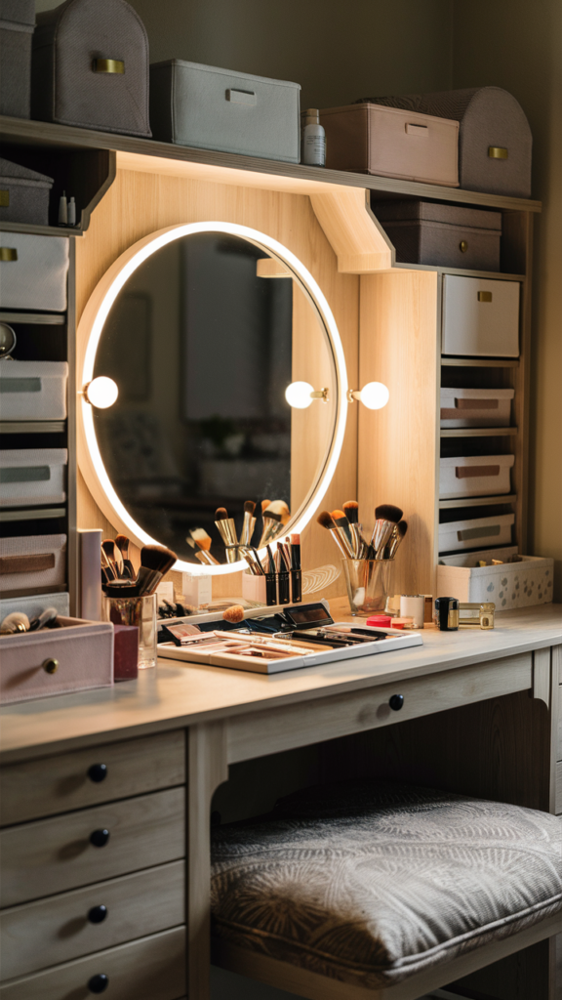
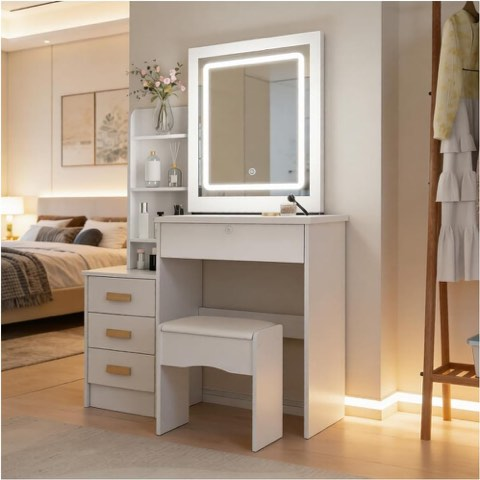
Altsuceser Vanity Desk with Sliding Mirror and Lights, Doubles as a Writing Desk
Shop on Amazon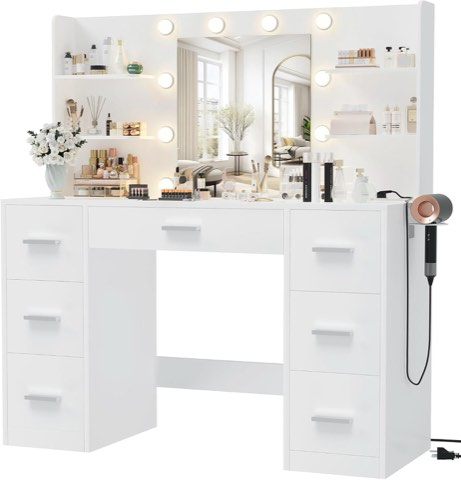
Furmax Vanity Desk with LED Mirror, Power Outlet, 7 Drawers Makeup Table
Shop on Amazon15. Color-Block the Zone
Painting just the work corner a different color than the rest of the bedroom creates an instant visual boundary.
This costs very little beyond paint and doesn't require any furniture changes.
The color shift alone is often enough to signal "different mode" the moment you step into that corner.
One of the more creative low-cost solutions on this list.
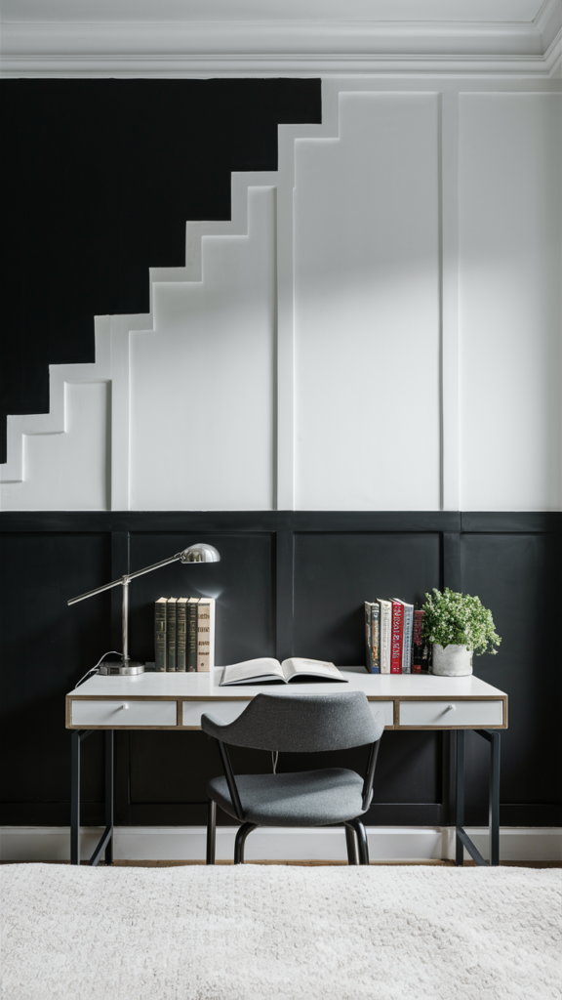


16. Hide the Whole Desk Behind a Curtain
A curtain pulled across a desk nook hides the whole workspace from view the moment the day ends.
This is one of the cheapest, most dramatic boundary tricks available. A rod and a curtain panel, nothing more.
Out of sight genuinely helps with out of mind here.
Works in nearly any room, regardless of layout constraints.
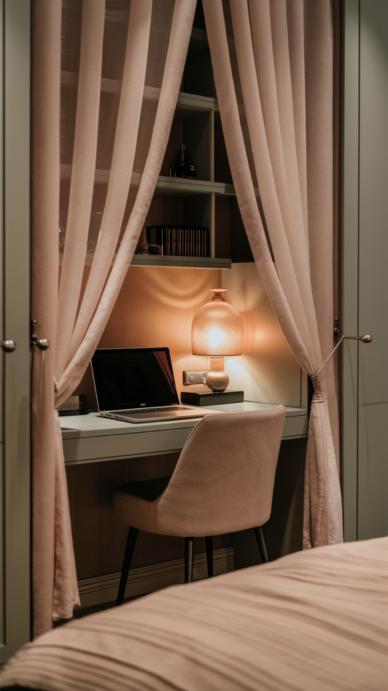
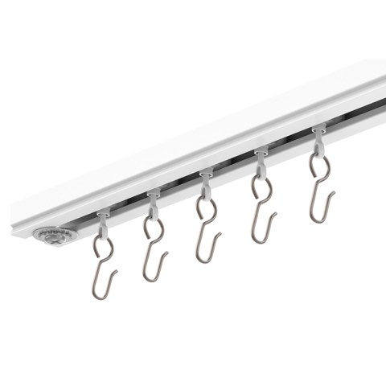
Room/Dividers/Now Aluminum Ceiling Curtain Track Set, Curtain Rails Ceiling Mount
Shop on Amazon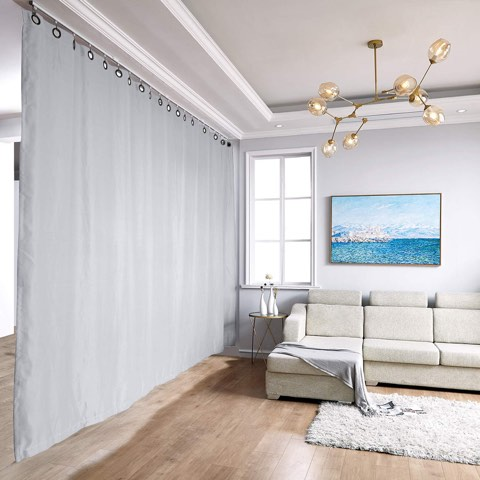
TWOPAGES Room Divider Curtain Ceiling Track Kit with Blackout Curtain, xx-Large B
Shop on Amazon17. Mount the Desk to the Wall
A fold-down or wall-mounted desk disappears when work is done, which is the most literal boundary-setting trick on this list.
This suits the smallest bedrooms, where any standalone desk eats into usable floor space permanently.
Closing it up at the end of the day is a genuine ritual, not just a styling choice.
A practical solution for a studio or very small bedroom.
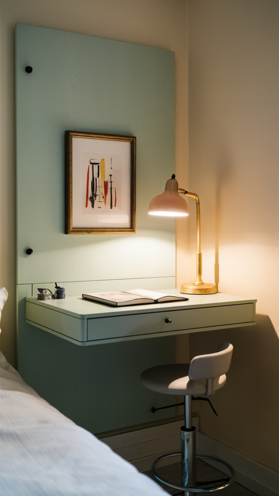
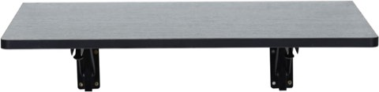
Folding Desk, Fold Down Wall Mounted Desk for Small Space, Black, Medium
Shop on Amazon18. Build the Desk Into the Wall
A desk built into a wall, rather than placed as standalone furniture, reads as part of the room's architecture rather than an intrusion into the bedroom.
This is a bigger project than most ideas here, but it creates the clearest physical boundary available short of a wall.
It also keeps the desk from visually competing with the bed for attention.
Worth it if you're using the space as an office daily, not occasionally.
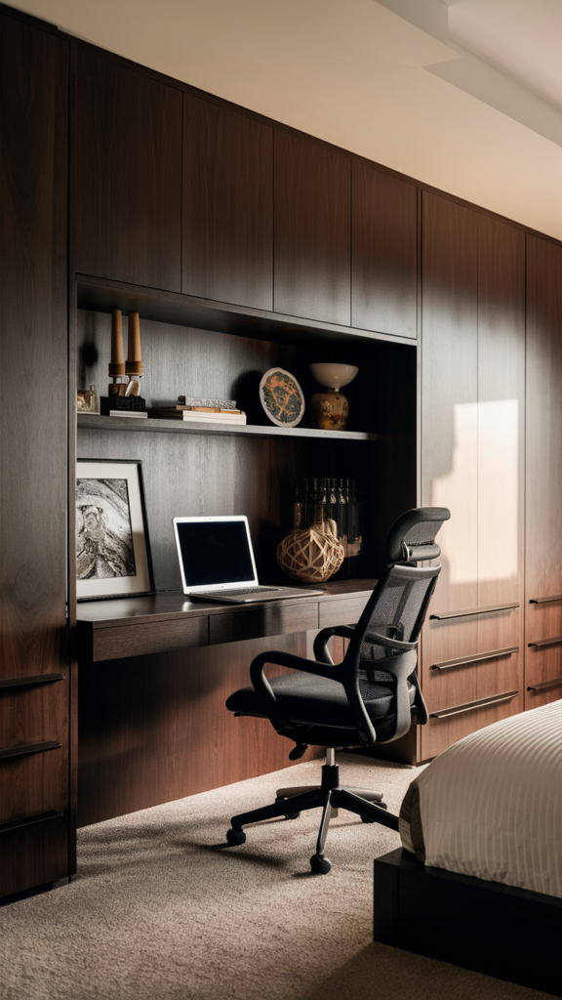
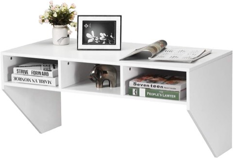
GIANTEX Wall Mounted Desk Floating Computer Desk, Writing Study Table W/3 Storage
Shop on Amazon19. Frame the Corner With Floating Shelves
Shelves above a desk create a visual frame that separates the work corner from the rest of the room without a wall.
This works especially well in a room too small for a full partition.
The shelving itself signals "this zone is different" the moment you glance at it.
A low-cost way to create boundary without construction.
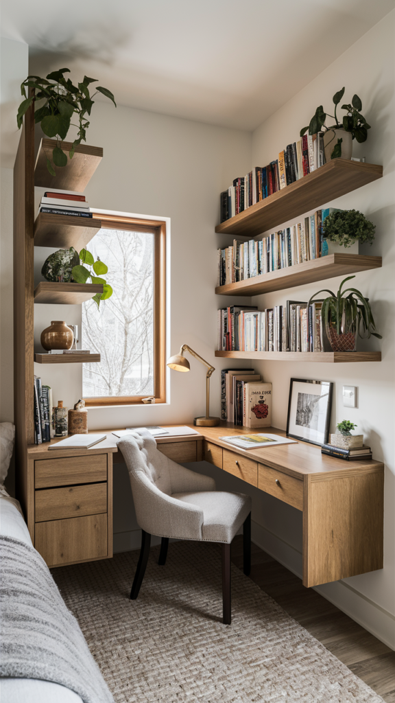
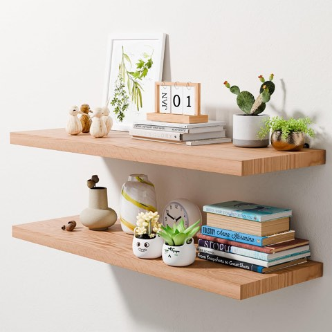
36 Inch Solid Oak Floating Shelves, Natural 12 Inch Deep Wall Shelf Set of 2
Shop on Amazon12x4-Inch Natural Oak Wood Floating Shelf for Wall Decor
Shop on Amazon20. Keep the Desk Truly Clutter-Free
A desk with nothing left on it at the end of the workday sends a clear signal that work has stopped.
This requires closed storage nearby, since the goal is an empty surface, not just a tidy one.
The visual cue matters as much as the actual tidiness. An empty desk reads as "off."
One of the simplest boundary-setting tricks on this entire list.
rgcgeem White Wooden Desk Organizer Set, Minimalist Home Office Organization
Shop on AmazonDDYURI Wooden Desk Organizer with 2 Drawers, Desktop Storage Drawers for Office
Shop on AmazonNone of This Needs a Separate Room
A bedroom office doesn't need a separate room to actually separate work from rest.
Physical boundaries, a cabinet, a curtain, a fold-away desk, visual ones, color, style contrast, lighting, and ritual ones, closing a cabinet, dimming a lamp, all work toward the same goal.
Pick whichever fits the room's actual size and budget, not just the one that photographs best.
The real measure of success isn't how the setup looks. It's whether work actually stops feeling like work when the day ends.